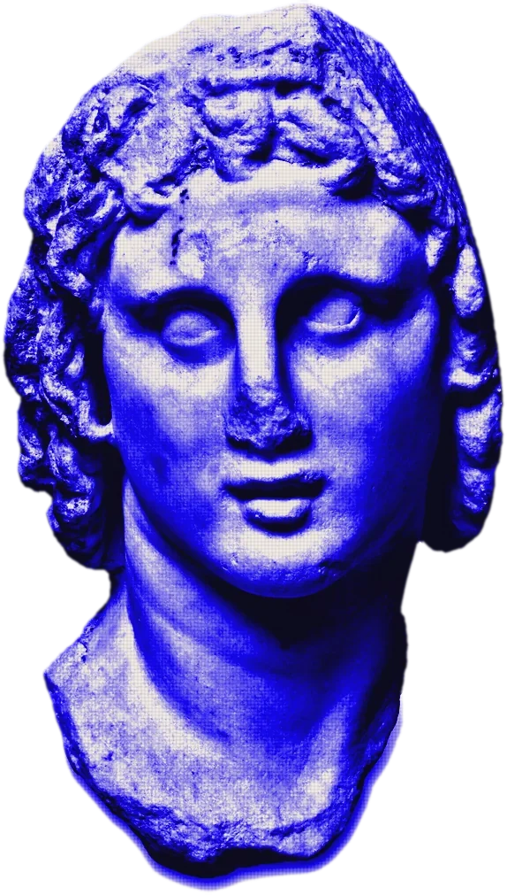
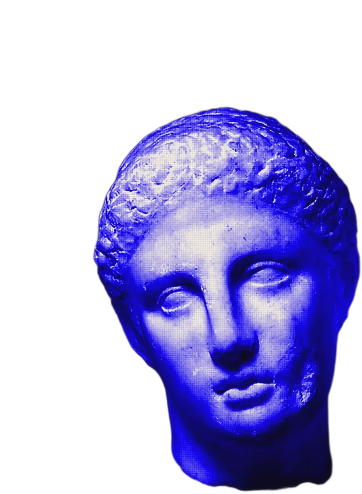
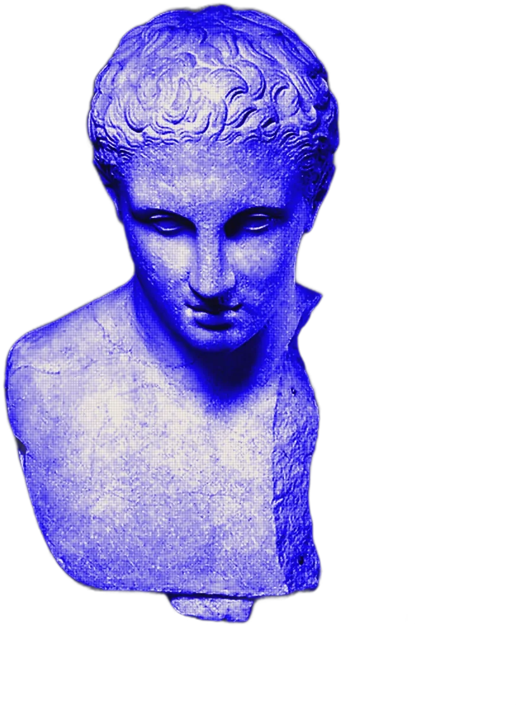
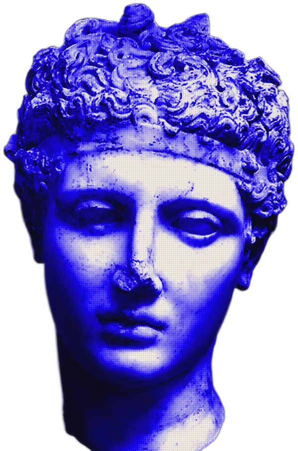

When you record a take, Kleos turns it into numbers you can check for yourself: how quickly you speak, where you pause, whether your sentences lift at the end, how often your eyes leave the lens. Each one sits against a range, and we tell you whether that range comes from published research or from our own testing.
People make up their minds about us quickly, and they do it mostly from how we sound and carry ourselves, well before they’ve weighed what we said. It’s one of the more reliable findings in social psychology, and it’s the reason Kleos exists. These are a few of the studies we lean on.

Strangers watched silent clips of teachers, some only a few seconds long. Their quick ratings lined up closely with what the teachers’ own students said at the end of term.1
With the words filtered out of short clips of surgeons talking to patients, the ones who sounded more dominant were more likely to have been sued for malpractice.2
In 138 recorded mock interviews, things a machine can measure, like fluency, filler words and smiling, predicted how people were rated by the humans watching.4
Interviewers form an impression during the first few minutes of chat, and it quietly shapes how they score the formal answers that come after.3
Every word in your take gets a timestamp, and your pitch and loudness are tracked through each sentence. On camera, face and posture landmarks show where your eyes go. Ranges marked research follow published findings; the others are ours, and we’ll keep saying so until a study backs them.

We don’t score your face, your body, your accent or the natural sound of your voice. Those aren’t things anyone should have to change, and practice doesn’t change them anyway. Everything Kleos measures is something you can actually work on.
Kleos isn’t a medical or psychological test, and nothing it tells you is a diagnosis.
Your video is measured and then deleted. The one exception is if you choose to help train Poise; then your takes are kept for up to a year so paid raters can score them, and they’re removed as soon as you switch it off.
Some of our ranges come straight from published research and others we set ourselves from practice takes, which is why every range says where it came from. Next, we want real people to rate thirty-second takes so we can check each range against what listeners actually hear. When that’s done, the results will go on this page.
KleosYou may have heard that 93% of communication is nonverbal. The number comes from two small experiments in 1967 in which people heard single words said in different tones of voice, and the researcher behind it has said it was never meant to describe ordinary conversation.
What you say matters a great deal. That’s why Kleos reads your words as well as your delivery, and keeps the two apart so you can see which one let you down.